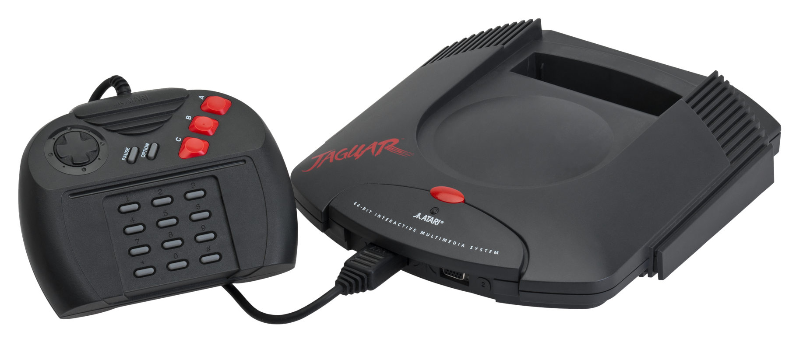

Generation 5 saw the introduction of 3D graphics to consoles, as well as the first 64-bit processors.
In 1993, Atari released the Jaguar. Powered by "Tom" and "Jerry", 2 custom 32-bit processors, Atari marketed the jaguar as the worlds first 64-bit game system.
With a final library of only 50 licensed games, and limited sales compared to its competitors, the Jaguar was considered a commercial failure, prompting Atari to leave the console market.
The Jaguar, however, has since been considered an open platform due to Hasbro Interactive acquiring Atari's properties and releasing the patents for the Jaguar into public domain.
This has led to many hobbyist-produced games since the Jaguar's discontinuation.
The 3DO Interactive Multiplayer, or simply 3DO, was developed by The 3DO Company.
The 3DO was not a singular console, but rather a set of specifications to be licensed to third parties, with the first 3DO produced by Panasonic in 1993.
The suggested retail price of 3DO consoles was $699, which may have been a key factor in it's commercial failure, though many retailers did not sell their consoles at this price.
The 3DO's commercial failure can be accredited to the console's lack of exclusives compared to competitors like the PlayStation and Nintendo 64.
The Sega Saturn was the successor to the successful Sega Genesis.
It was released to initial success in Japan in 1994, but a suprise launch in the United States in May of 1995, 4 months before its scheduled release date, led to a failure to sell in large numbers in the west.
While the Saturn is fondly remembered by many for several well-regarded games, it received mixed reception due to limited support for third-party titles and complex hardware design.
The Saturn's rapid loss in market share due to the release of the Nintendo 64, as well as the cancellation of the first planned 3D Sonic the Hedgehog game, named Sonic X-treme, led to the consoles discontinuation in 1998.
The Nintendo 64 was released in 1996 as the successor to the SNES. It was the last major home console to use cartridges as its primary storage format until the Nintendo Switch in 2017.
Codenamed Project Reality, as well as the Ultra 64 as a test model, the Nintendo 64 is named after its 64-bit CPU, which massively aided in its 3D graphical capabilities.
The Nintendo 64 received multiple accessories to add new functionality in the form of "paks".
For example, the Expansion Pak increased the consoles memory from 4MB to 8MB, while the Rumble Pak added support for controller vibration.
Overall, the N64's expansive library of games and its competitive pricing with other consoles made it a commercial success with over 32 million units sold internationally.
| Console | Jaguar | 3DO | Saturn | PlayStation | Nintendo 64 | |
|---|---|---|---|---|---|---|
| CPU Clock Speed | 16.67MHz | 12.5MHz | 28.6MHz | 33.87MHz | 93.75MHz | |
| Video Memory/Clock Speed | Shared with RAM | 1MB | 1.5MB | 62.5MHz | ||
| RAM | 2GB | 8GB | 8GB | 4GB | 4MB/8MB* | |
| Internal Storage | None | 32KB | 32KB | None | None | |
*With Expansion Pak.
Sources cited:
Wikipedia/Atari Jaguar
Wikipedia/3DO
Wikipedia/Sega Saturn
Wikipedia/PlayStation (Console)
Wikipedia/Nintendo 64